ggmsa: Plot multiple sequence alignment using ggplot2
2020-05-25
ggmsa.RmdIntroduction
Plot multiple sequence alignment using ggplot2 with multiple color schemes supported.
Supports visualizing multiple sequence alignment of DNA and protein sequences using ggplot2 It supports a number of colour schemes, including Chemistry, Clustal, Shapely, Taylor and Zappo. Multiple sequence alignment can easily be combined with other ‘ggplot2’ plots, such as aligning a phylogenetic tree produced by ‘ggtree’ with multiple sequence alignment.
Installation
This R package (ggmsa, current version: 0.0.4) is avalable via CRAN. The way to install the package is the following:
## installing the package install.packages("ggmsa") ## loading the package library("ggmsa")
Load sample data
Three sample data are shipped with the ggmsa package. Note that ggmsa supports not only fasta files but other objects as well. available_msa()can be used to list MSA objects currently available.
available_msa() #> files currently available: #> .fasta #> XStringSet objects from 'Biostrings' package: #> DNAStringSet RNAStringSet AAStringSet BStringSet DNAMultipleAlignment RNAMultipleAlignment AAMultipleAlignment #> bin objects from 'seqmagick' package: #> DNAbin AAbin protein_sequences <- system.file("extdata", "sample.fasta", package = "ggmsa") miRNA_sequences <- system.file("extdata", "seedSample.fa", package = "ggmsa") nt_sequences <- system.file("extdata", "LeaderRepeat_All.fa", package = "ggmsa")
Visualizing Multiple Sequence Alignments
The most simple code to use ggmsa:
ggmsa(protein_sequences, start = 265, end = 300)
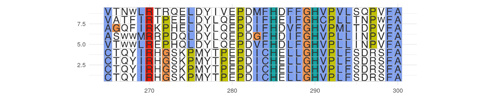
Colour Schemes
Several classic color schemes for MSA are shipped in the package. In the same ways, you can use available_msa() to list colour schemes currently available. Note that Amino acids and nucleotides have different colour schemes.
available_colors() #> color schemes for nucleotide sequences currently available: #> Chemistry_NT Shapely_NT Taylor_NT Zappo_NT #> color schemes for AA sequences currently available: #> Clustal Chemistry_AA Shapely_AA Zappo_AA Taylor_AA
Clustal X Colour Scheme(Default)
This is an emulation of the default colourscheme used for alignments in Clustal X, a graphical interface for the ClustalW multiple sequence alignment program. Each residue in the alignment is assigned a colour if the amino acid profile of the alignment at that position meets some minimum criteria specific for the residue type.
ggmsa(protein_sequences, start = 320, end = 360, color = "Clustal")
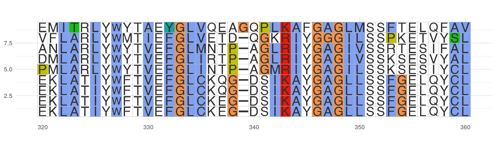
Color by Chemistry
Amino acids are colored according to their side chain chemistry:
ggmsa(protein_sequences, start = 320, end = 360, color = "Chemistry_AA")
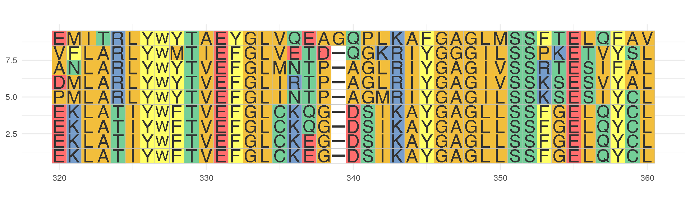
Color by Shapely
This color scheme matches the RasMol amino acid and RasMol nucleotide color schemes, which are, in turn, based on Robert Fletterick’s “Shapely models”.
ggmsa(protein_sequences, start = 320, end = 360, color = "Shapely_AA")
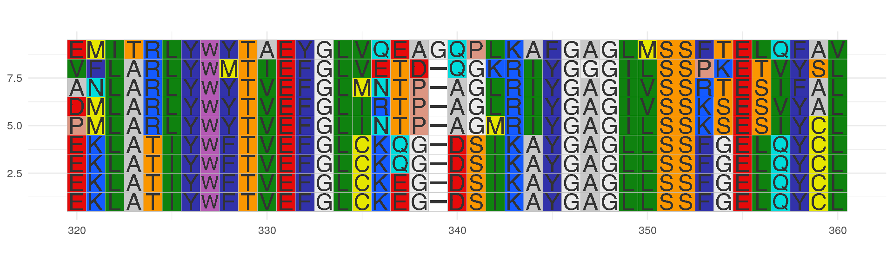
Color by Taylor
This color scheme is taken from Taylor(Taylor 1997) and is also used in JalView(Waterhouse et al. 2009).
ggmsa(protein_sequences, start = 320, end = 360, color = "Taylor_AA")
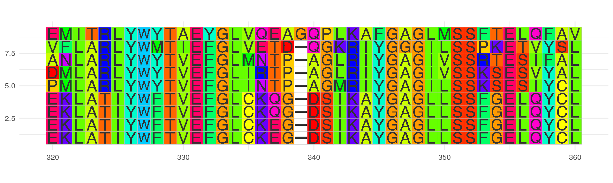
Color by Zappo
This scheme colors residues according to their physico-chemical properties, and is also used in JalView(Waterhouse et al. 2009).
ggmsa(protein_sequences, start = 320, end = 360, color = "Zappo_AA")
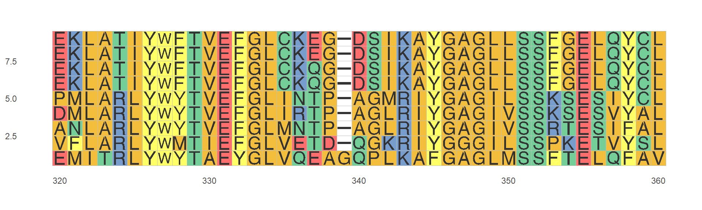
Font
Several classic font for MSA are shipped in the package. In the same ways, you can use available_fonts() to list font currently available
available_fonts() #> font families currently available: #> helvetical mono TimesNewRoman DroidSansMono
ggmsa(protein_sequences, start = 320, end = 360, font = "helvetical", color = "Chemistry_AA")
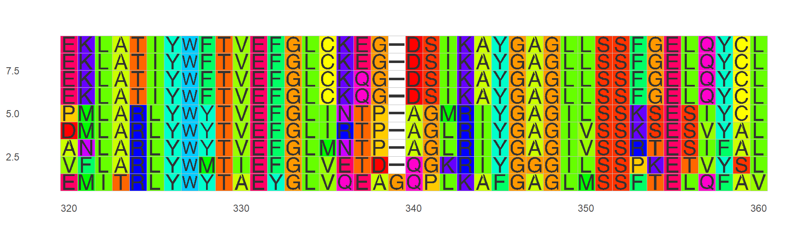
ggmsa(protein_sequences, start = 320, end = 360, font = "TimesNewRoman", color = "Chemistry_AA")

ggmsa(protein_sequences, start = 320, end = 360, font = "DroidSansMono", color = "Chemistry_AA")
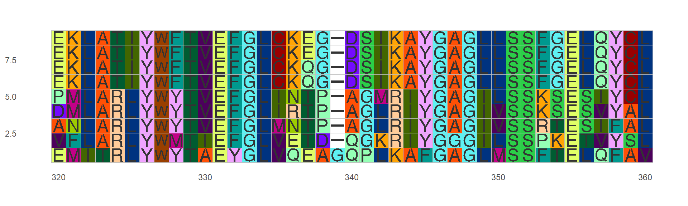
If you specify font = NULL, only tiles will be plot.
ggmsa(protein_sequences, start = 320, end = 360, font = NULL, color = "Chemistry_AA")
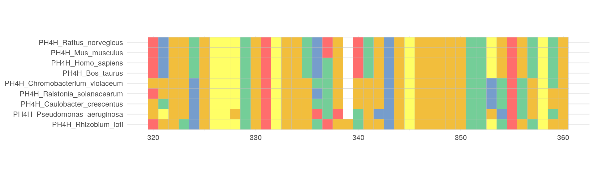
Other params
Characters width can be specified by char_width. Defaults is 0.9.
ggmsa(protein_sequences, start = 320, end = 360, char_width = 0.5, color = "Chemistry_AA")
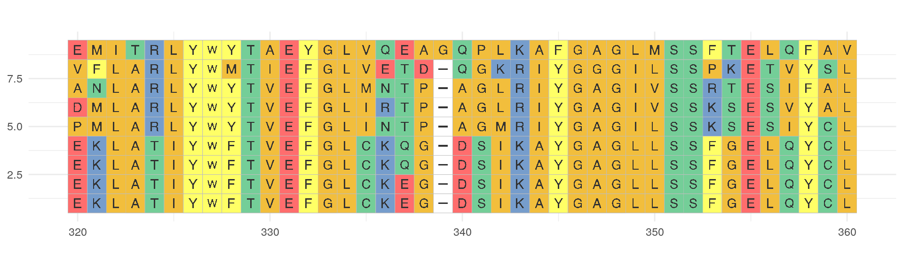
Background can be specified by none_bg. If none_bg = TRUE, only the character will be plot.
ggmsa(protein_sequences, start = 320, end = 360, none_bg = TRUE) + theme_void()
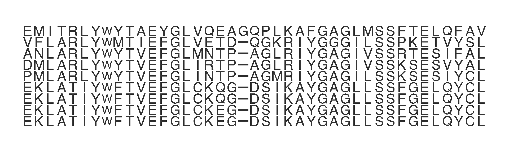
Position Highligthed can be specified by posHighligthed. The none_bg = FALSE when you specified position Highligthed by posHighligthed
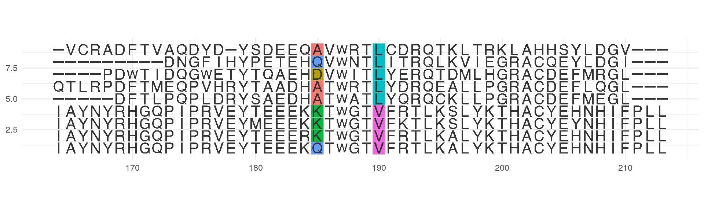
Sequence names Defaults is ‘NULL’ which indicates that the sequence name is displayed when font = NULL, but ‘font = char’ will not be displayed.
If seq_name = TRUE the sequence name will be displayed when you need it.
ggmsa(protein_sequences, 164, 213, color = "Chemistry_AA", seq_name = TRUE)
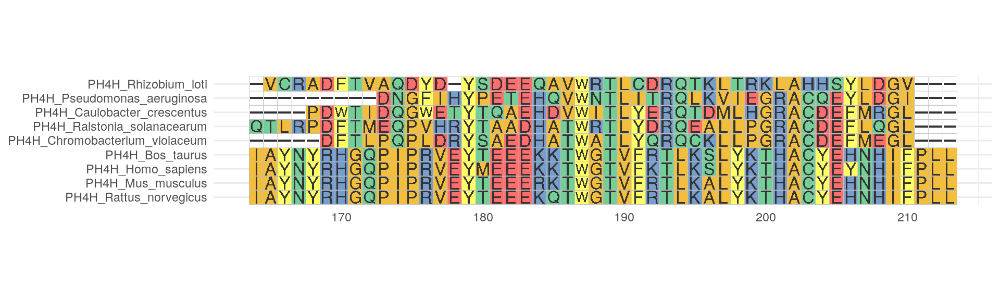
If seq_name = FALSE the sequence name will not be displayed in any case.
ggmsa(protein_sequences, 164, 213, font = NULL, color = "Chemistry_AA", seq_name = FALSE)
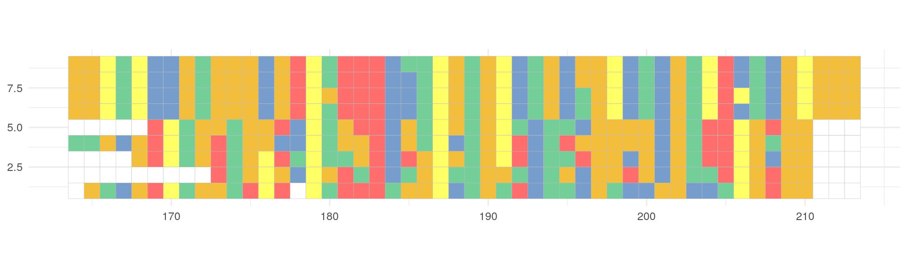
Reference
Taylor, W R. 1997. “Residual Colours: A Proposal for Aminochromography.” Protein Eng 10 (7): 743–46.
Waterhouse, A. M., J. B. Procter, D. M. Martin, M Clamp, and G. J. Barton. 2009. “Jalview Version 2–a Multiple Sequence Alignment Editor and Analysis Workbench.” Bioinformatics 25 (9): 1189.